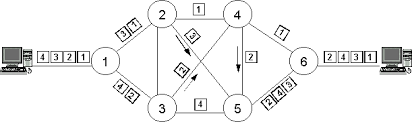
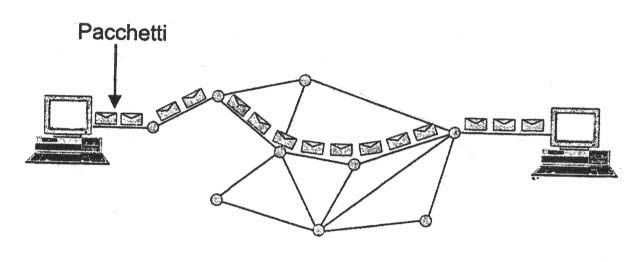

Il Paese oltre ad essere isolato dal punto di vista politico ed economico è isolato anche dal punto di vista tecnologico e delle comunicazioni, infatti la Corea del Nord ha una rete isolata non connessa a quella mondiale. Si chiama Kwangmyong ed è accessibile solo dall’interno della Corea del Nord e la lingua utilizzata è principalmente il coreano. Dato che non vi è alcuna connessione diretta all'Internet esterno, le informazioni indesiderate non possono entrare nella rete. Ogni informazione viene prima filtrata dal governo perciò i contenuti diffusi online sono per lo più messaggi di propaganda. Qui i siti sono pochissimi e riguardano politica, economia, scienza e cultura. Non tutti i cittadini della Corea del Nord sono comunque completamente isolati dall’estero. Un numero estremamente piccolo di persone, che comprende ricercatori e membri del regime, può accedere a Internet per come la intendiamo noi, seppure con qualche limitazione.
Il network è una rete intranet e utilizza come dominio .kp, gli stranieri in Corea del Nord non posso accedere al Kwangmyong, ma possono accedere all’internet globale.
C’è bisogno perciò di una maggiore sicurezza infatti tutta la rete è protetta da un air gap, ovvero un vuoto d’aria, esso consiste nel divieto dei computer che posso accedere ad internet ad essere collegati nella stessa LAN di un computer collegato a Kwangmyong.
L’air gap circoscrive l'accesso alle risorse informatiche solo a persone e sistemi informatici già appartenenti alla LAN e/o presenti fisicamente nello stesso luogo ove sono ubicate le macchine. In questo modo è possibile proteggere in maniera sicura tutti i dati sensibili presenti all'interno del sistema da eventuali incursioni esterne: l'unico modo che si avrebbe per renderli disponibili all'esterno sarebbe tramite chiavette USB o altri dispositivi di archiviazione di massa rimovibili.
L'intranet è una rete aziendale privata che utilizza il protocollo TCP/IP, e può estendersi con collegamenti WAN e VPN. Spesso tale rete o è completamente isolata dalla Rete Internet esterna rimanendo a solo uso interno, oppure comunica eventualmente con la rete esterna, attraverso opportuni sistemi di comunicazione e relativa protezione (Firewall, VPN). Capita così che l'Intranet nasca dalla somma delle LAN delle diverse società o sedi distaccate.
Extranet
Quando una parte della intranet viene resa accessibile a clienti, partner o altre persone esterne all'organizzazione, tale parte diventa una extranet. Le tecnologie dell’extranet sono: VPN, Web Access.
VPN
In una VPN i pacchetti viaggiano incapsulati in altri pacchetti con protocolli sicuri sottoposti a sistemi di crittografia. La rete VPN crea come un tunnel (tunneling) tra due connessioni punto‐punto tramite la rete internet, in cui è impossibile che i pacchetti siano letti.
Web Access
L'accesso alla Extranet è pubblicato su Internet, dopo una fase iniziale di riconoscimento le funzionalità della Extranet sono messe a disposizione tramite un'interfaccia Web. Richiede quindi un accesso a Internet da parte dell'utilizzatore, e che parte dell'infrastruttura ricevente sia esposta sulla rete pubblica.
Sistema di protezione: Firewall
I sistemi di protezione usati dalla intranet nord coreana oltre all’air gap e VPN sono ovviamente i firewall.
Firewall vuol dire letteralmente muro taglia fuoco. È un sistema (Hardware - Software) di controllo degli accessi e verifica tutto il traffico negando o consentendo il passaggio. Essenzialmente funziona cosìÈ un sistema perimetrale di una rete ed è l’unico punto di contatto della rete aziendale con la rete internet. Controlla tutto il traffico che lo attraversa. Ciò significa che, se l’intrusione è avvenuta dall’interno il firewall è impotente.
- Verifica il pacchetto intransito (IP Filtering)
- Maschera gli indirizzi interni (NAT, Network Address Translation)
- Blocca i pacchetti non autorizzati o pericolosi.
La rete Intranet ha diversi benefici in campo aziendale:
- Produttività della forza lavoro. Rendono più facilmente accessibili e rintracciabili informazioni e documenti necessari per il lavoro. L'interfaccia web, inoltre, permette di accedere agli applicativi in maniera immediata. Utilizzando una VPN, inoltre, sarà possibile accedere a queste risorse da qualunque parte, con qualunque computer e in qualsiasi momento della giornata
- Tempo. Non si avrà più bisogno di essere necessariamente in sede per lavorare, potendo così sfruttare eventuali tempi morti (viaggi, spostamenti sui mezzi pubblici e altro).
- Comunicazione. Le Intranet possono essere uno strumento molto potente per facilitare e migliorare le comunicazioni interne all'azienda.
- Favorire e migliorare la collaborazione. I miglioramenti a livello comunicativo hanno un impatto considerevole anche sul livello di collaborazione tra i vari dipendenti.
- Efficienza e economicità. La messa online dei documenti permetterà di eliminare la necessità di produrne fisicamente, garantendo un risparmio sulla stampa e sull'utilizzo di carta.
- Compatibilità multipiattaforma. L'accesso tramite web browser garantisce l'interoperabilità di una qualunque piattaforma Intranet.
Una intranet nazionale è una rete “closed platform” basata su protocolli TCP/IP gestita da uno stato nazione come sostituto nazionale per l'Internet globale, con l'obiettivo di controllare e monitorare le comunicazioni dei suoi abitanti attraverso politica di censura di Internet e di sorveglianza informatica, oltre a limitare il loro accesso ai media esterni.
Una closed platform al contrario di una piattaforma aperta, in cui in cui i consumatori hanno accesso illimitato alle applicazioni e ai contenuti, limita l’accesso alle applicazioni o ai contenuti non approvati.
Il modello tcp/ip si sviluppò quando la rete internet si stava diffondendo rapidamente, e data la mancanza di uno standard venne creato questo protocollo. Esso permetteva la trasmissione dei dati tra computer su internet in modo preciso, con la riduzione degli errori, e poteva essere usato su qualsiasi sistema e rete. Esso è un’architettura alternativa a ISO/OSI, ed oggi viene usato per far funzionare internet.
Il modello dovrebbe chiamarsi Internet Protocol Suite ma normalmente viene chiamato TCP/IP, dato che sono i 2 protocolli della suite.
È formato da 4 strati:
4 – Application layer
3 – Transport layer
2 – Internet layer
1 – Network access layer
Application Layer
Questa è l’interfaccia con l’utente per le applicazioni della rete internet, qui troviamo protocolli usati per il trasferimento dati FTP e per la ricerca dei domini DNS. Esso svolge le funzioni dei livelli 7, 5, 6 del modello ISO/OSI.
Transport Layer
Si occupa del trasporto delle informazioni sulla rete Internet. Il trasporto è svolto da 2 protocolli di rete: TCP e UDP. (iso/osi layer 4)
- TCP -> il trasporto avviene attraverso una connessione all’host di rete, si realizza un trasporto affidabile senza perdita di dati e con recupero degli errori, quindi verifica che tutti i pacchetti raggiugano la destinazione.
- UDP-> il trasporto avviene senza connessione, i dati vengono inviati all’host senza nessuna conferma dell’arrivo.
Internet Layer
Frammenta le informazioni in pacchetti e li trasmette sulla rete, utilizzando il protocollo IP, che individua gli indirizzi della sorgente e di destinazione del percorso migliore su cui far viaggiare i pacchetti. Utilizza il protocollo ARP (Address Resolution Protocol) per ricercare il MAC address dall’indirizzo IP, esiste anche il processo inverso RARP (la R sta per Reverse). Alla ricezione di tutti i pacchetti questi vengono assemblati in un'unica informazione. Questo livello svolge le funzioni dei livelli 3 del modello ISO/OSI. (rete a commutazione di pacchetto).
Network Access Layer
Questo livello specifica come devono essere inviati i dati a livello fisico e definisce le caratteristiche fisiche del mezzo trasmissivo. Esso svolge le funzioni dei livelli 2 e 1 del modello ISO/OSI.
Sia TCP/IP che ISO/OSI usano l’incapsulamento dei dati, ovvero che nel passaggio da un layer superiore a quello inferiore i dati vengono messi in una busta, con l’aggiunta dell’intestazione del layer. Nel processo inverso, da layer inferiori a superiori i dati vengono sbustati.
Le reti geografiche, compresa internet, sono composte da 2 sotto reti:
- Rete di accesso, è la rete che collega l’utente alla prima centrale di commutazione (provider) utilizzando i nodi di accesso. I vari mezzi trasmissivi sono: rame, fibra o radio.
- Rete di trasporto, è la rete che distribuisce il traffico verso i vari provider, dove i nodi di transito svolgono una funzione di trasporto veicolando i dati da una estremità all’altra della rete.
Le reti di comunicazione sono pubbliche e i collegamenti tra i nodi avviene in modo commutato.
Commutazione di pacchetto
Questa idea è nata durante la guerra fredda, quando si doveva garantire la sopravvivenza della comunicazione anche nel caso di una guerra nucleare. L’informazione (i dati) viene frammentata in pacchetti in cui è contenuto l’IP di destinazione, l’IP della sorgente e un numero progressivo che individua la sequenza dei pacchetti. I pacchetti vengono inviati singolarmente sulla rete e possono seguire percorsi diversi attraverso i nodi, ogni volta che un nodo riceve il pacchetto e lo smista e lo invia al nodo successivo rendendo libera la linea, quindi si aumenta la condivisione della stessa. Una volta arrivati al nodo di destinazione vengono assemblati.
Questo metodo permette un uso più efficiente della rete, permettendo una maggiore condivisione del mezzo trasmissivo e Fault Tolerance.Commutazione di circuito
Quando 2 host comunicano con questa metodologia si stabilisce un circuito dedicato punto-punto per tutta la durata della comunicazione. Si hanno 3 fasi: Connessione, in cui l’utente fornisce le indicazioni per attivare il circuito e vengono individuati i nodi intermedi; Scambio dei dati: in cui avviene lo scambio; Disconnessione: in cui si libera la linea occupata. Garantisce l’arrivo del pacchetto, ma ha un maggior costo.